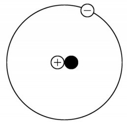
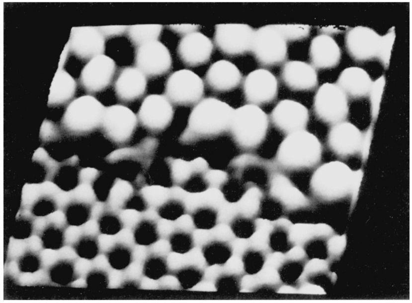
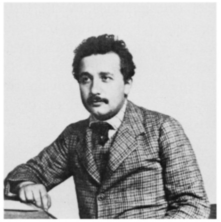
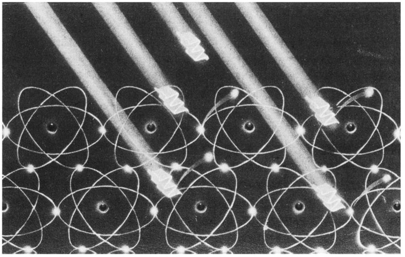
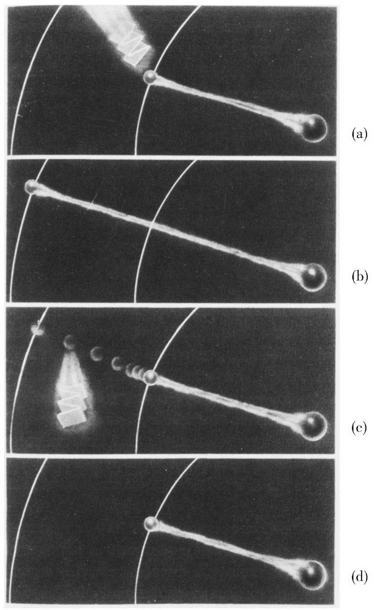
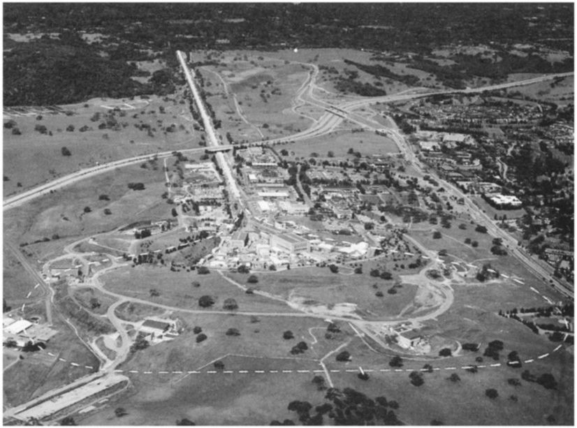
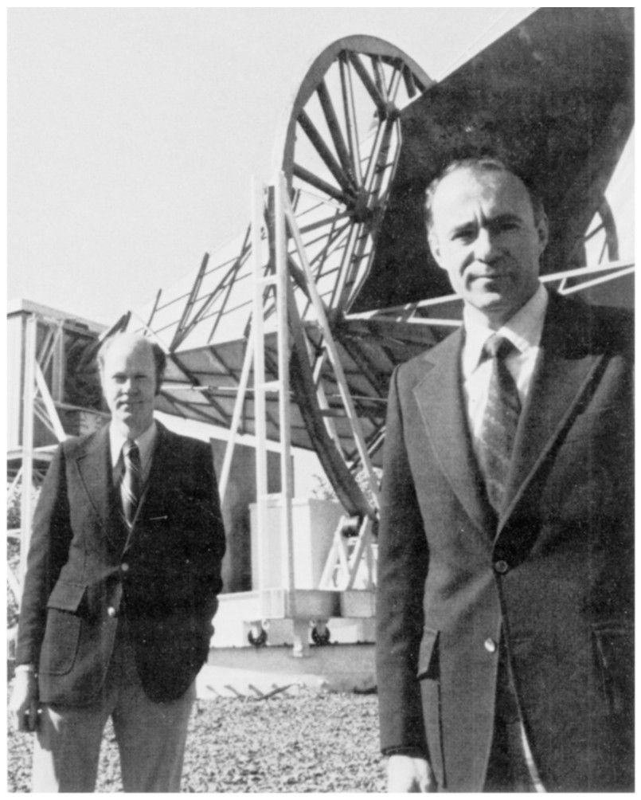

第四章
第四章关于光的对话
第四章上午我曾在三一学院后面的公园里休息。到这儿后，我们在草地的安静处坐下来。我的同伴开始讲话。
牛顿： 在我所参考的一本物理书中提到，相对论问题与光的性质密切相关，所以我们就谈谈光吧。
在我所处的时代，我认为光是由在空间快速运动的小粒子组成的。对木星的卫星所进行的细致的研究使我们得以确定光速，或者更精确地说，是确定光的那些粒子相对于绝对空间的速度，约为300 000千米每秒。我强调是大约 。毕竟，我们这里所论述的是对极高速度的一种粗略估计，它还取决于光源的运动速度，以及其他一些可能的情况。
哈勒尔： 请等一下。如今我们可以非常精确地测量光速。1秒钟内光线能行进299 792 458米，已经知道这个速度准确到大约1米每秒。
牛顿： 太令人惊讶了！这种精确度简直令人难以置信。我们一定得找个时间，你来讲讲已能做到这样的测量的巧妙方法。但首先，我想让你来考虑一下这种情况：你看到那边的塔了吧，假设我朝那个方向亮一下手电筒，光粒子就会以我们所谓的速度c 由灯向塔运动，c 接近300 000千米每秒。现在，我拿着手电筒快速向相反方向即背离塔的方向奔跑。
光粒子以速度c 离开灯，可是灯每秒也有5米的位移。我们看到光粒子不是以速度c 运动而是以（c -5）米/秒的速度运动。
而当我拿着手电筒向塔的方向跑时，这个过程就反过来了。在这种情况下，在一个静止的观察者看来，光粒子是在以比光速c 还快的速度运动。精确地说，光粒子的速度为（c +5）米/秒。在我所处的时代，光速能够被测量到1米/秒的精度，这种事对我来说是绝不可能发生的。可是几分钟前你所提到的那种精确度量级，意味着当今我们应该能在每秒几米的量级上区分光粒子的不同速度。
你眼下所说的究竟是哪种速度呢？是光粒子参考手电筒还是参考某个特定的观察者的速度？
哈勒尔： 我谈论的仅仅是用字母c 所表示的光速。无论我们何时测量光速，我们得到的都是我刚才给出的那个数值c 。我们从未得到过其他速度。光速是个自然常量。
牛顿： 这听起来真是荒谬可笑、难以置信。你是物理学家，你应该知道没有什么速度能是个自然常量。任何速度都取决于观察者。不论是从一艘行驶的轮船上还是从一辆快速奔驰的小汽车上发出的光的速度都会与我所拿的手电筒发出的光粒子的速度不一样。
断言所有光粒子以相同的速度运动，这就如同说无须考虑观察者所有炮弹都是以相同速度飞行一样荒谬可笑。那不仅与我在《原理》中建立的一些定律矛盾，而且还违背常识。
哈勒尔： 我同意你的观点。我所说的当然与你的定律相矛盾，而且看起来这也与你所援引的常识相违背。可是的确如此，光总是以相同的速度运动。这并不是我的想法，而是已经被实验证明了的事实。
牛顿： 这个实验是什么时候做的？又是由谁完成的？
讲这些话时牛顿非常激动，他迫不及待地要搞清究竟。他意识到他的整个力学大厦可能有与这个实验发现无法相容的危险。我等了几分钟才继续讲下去。
哈勒尔： 讲这个实验之前，我先说说光的本性。刚才你谈到了光粒子；它们确实存在，如今我们称之为光子（photon）。
牛顿： “它们确实存在”，你这话是什么意思？很久以前我就在《原理》中谈过光粒子，它们当然存在。可是在你和我之间，我必须承认我没有绝对的把握。有些光现象，比如光在狭缝处的衍射，我就不能用我的假说来解释。
欧洲大陆特别是荷兰与法国的一些自然科学家对我的理论不以为然。他们坚持认为，光不是由粒子构成的，而是一种波，而波需要某些介质来传播。这种介质被认为是一种充满了整个空间的以太（ether）。除了以太观点之外，波动理论有些有趣的性质我确实难以对付。如果发现了能使波动理论与我的粒子理论相一致的可能性，哪怕有某种折中的可能，我都可以接受它。我一直在寻找，可最终还是放弃了，这么做是对的。毕竟，你刚才亲口告诉我，我的光粒子理论被证明是正确的。
哈勒尔： 容易，这太容易了，艾萨克爵士。确实有许多实验证明了光是由微小的粒子即光子构成的这种观点。可是这并不意味着你的光理论真的正确！你一直在寻找的这种折中确实存在。这是1905年由当时正在我家乡伯尔尼的专利局工作的一位年轻物理学家发现的。碰巧，他也正是创立相对论基础的人。
牛顿： 我恭喜这个人。他叫什么名字？
哈勒尔： 他叫爱因斯坦。我们将会经常提到他。爱因斯坦可能是20世纪最重要的自然科学家。他1955年在美国去世。
牛顿： 我对这位爱因斯坦很有兴趣。另找个时间，也许明天，你可以多给我讲些他的事情。此时我想准确地了解，爱因斯坦是如何设法在波与粒子之间找到折中的。
哈勒尔： 恐怕我没法现在就详细讲，特别是由于那些问题并不是直接与相对论有关。但请允许我先简要地澄清一下：在18世纪至19世纪这段时间，光的波动理论逐渐为人们所接受。
牛顿： 啊哈，我猜就会是这样。
牛顿满怀期待地注视着我。他并未失望，而是平静地接受着我的一些论点。
哈勒尔： 让我们假设，像声波或是湖水表面的波一样，光以波的形式传播，那么我们就可以解释我们前面提到过的诸如衍射之类的许多光现象。在这种假设下，也可以详细计算光是如何穿过复杂的望远镜的。用这种方法，我们可以建造高分辨率的望远镜，这在天文学上已获得了特别的成功。到19世纪末期，已没有人再怀疑光是一种波动现象了。可是后来又观察到了一些奇怪的现象，特别是与原子有关的现象。
牛顿： 眼下我们无须提原子。前些天，我在原子理论上已经花了相当多的时间。不可思议的是，科学家们是如何设法识破物质并确认原子是化学元素的最小组分这一点的。
我对原子了解得如此之多，你感到惊讶吗？我认识到，原子本身是由更小的粒子——原子核以及由你们称为电子的微小粒子组成的壳层——构成的。我在电力方面也花了些时间，因为这是使原子的组分结合在一起的力。
还有很多关于原子的东西我不了解。比如，为什么有些原子核那么重？在我看来，原子核本身应该由更小的粒子构成。所以，下一个问题就是，是什么力使这些粒子结合在一起的呢？我不相信是电的吸引力，因为对电吸引力来说，原子核太稳定了。我倒认为必定是存在某种其他的力，一种与电力非常不同的核力。

图4.1 氘原子简图。氘原子由一个原子核和一个电子云构成。它的原子核中有一个带正电荷的质子和一个电中性的中子（黑圈）；电子云中只有一个（带负电荷的）电子，它围绕原子核运行。原子结构的稳定性来自电子与原子核之间的静电吸引力。
更复杂一些的原子是由几个电子围绕包含几个核子（质子和中子）的原子核运转，其中质子数一般等于壳层或电子云中的电子数，这样能确保整体的电中性。最简单的原子是氢，只有一个电子围绕一个质子运转。
哈勒尔： 假设原子核是由更小的粒子构成的，这一点你是完全正确的。原子核的这些成分确实存在，而且被称为核子（nucleon）。核子并非由电力而是由一种强得多的称为强核力的力结合在一起的，这种力有时也称做强相互作用。
牛顿简直着了迷。我一个接一个地证实了他的观点，显然他非常高兴。
哈勒尔： 我们还是回到光的话题，特别是如何用波粒二象性（wave-particle dualism）来描述光现象的问题。不久前，我的一位朋友在科普杂志上发表了一篇关于那个问题的文章。我建议你看一下。在本学院的图书馆就可能找到这篇文章。
牛顿： 好主意！尽管我们彼此相隔了300年，但显然你认为我能理解它。

图4.2 现代测量技术使原子可见。此图中所示为隧道显微镜产生的图像。这里硅原子和银原子的原子结构清晰可见。我们实际所看到的并不是原子自身的图像，而是由精密探针检测到的电子云所产生的电力场。这些探针利用的是一种被称为隧道效应（tunneling）的量子效应。［加利福尼亚圣何塞IBM研究实验室的R·威尔逊（R. Wilson）摄。］
哈勒尔： 我并不担心这一点。这篇文章是给并不熟悉物理学的人写的。20世纪非专业的读者在理解这篇文章时当然会比17和18世纪的顶尖物理学家遇到的困难更多。
牛顿： 好吧，我们去找找这篇文章吧。
我们非常幸运；在这个管理得井然有序的学院图书馆里，只用了几分钟我就拿到了该文的一份复印件。牛顿马上开始读起来。我打算利用这段时间在这座小城里稍微走一走。我们约好两小时后在四方院的喷泉旁碰面。
［我不想冒让我的读者在此处迷路之险。我把推荐给牛顿的文章在此处重印一遍，以防读者们找不到。如果有些论述与上面我和牛顿的讨论内容重复，还请读者们见谅。］

图4.3 坐在伯尔尼专利局的办公桌前的爱因斯坦。［可能是摄于1905年，承蒙爱因斯坦档案处惠允；承蒙美国物理联合会（AIP）尼尔斯·玻尔图书馆（Niels Bohr Library）惠允。］
牛顿的读物：光是什么？ 5
那是1904年，25岁的文职公务员爱因斯坦正在瑞士首都伯尔尼的专利局工作。他的工作是审查新的专利申请。
爱因斯坦的工作一直很忙。然而，他仍挤出时间去思考从在苏黎世做学生时起就铭刻在他大脑里的许多物理学难题。其中最重要的就是光的本性。
几十年以来，一直有关于光的不寻常的实验效应的报道。包括爱因斯坦在内，没人能弄清其中的含义，可现在他认为他已步入正轨了。他有了一种想法，这种想法最终成为我们的自然宇宙概念发生根本变化的出发点。
相当长一段时间以来，物理学家们一直致力于研究光的概念。理由很充分：除了我们身边的物质之外，光是我们日常生活中最显而易见的现象。
可光是什么呢？它是一种特殊的物质吗？最初试图回答这个问题的物理学家之一就是英国物理学家艾萨克·牛顿爵士。在他17世纪末出版的重要著作中，牛顿说光是由微小的粒子构成的。但是那种理论并不能令人信服。比如，一旦光被物体吸收时光粒子会怎么样？光粒子被物质“吞噬”了吗？
关于光的另一种观点是与牛顿同时代的荷兰人惠更斯（Christian Huygens）提出来的。他相信光和声音一样，是一种波动现象，而且光波是在一种充满整个空间的特殊介质中传播的；他把这种介质称为以太。
光的许多性质确实可以用这种方式来解释，比如当光进入水或玻璃时的折射。例如，这种现象可以用于望远镜。这有助于19世纪的人们接受惠更斯的思想。
当人们搞清楚光只不过是电磁波的一种特殊形式之时，光的波动理论取得了胜利。这一点是在19世纪末由德国物理学家赫兹（Heinrich Hertz）洞察到的。与发报机发射的无线电波一样，电磁波与可见光的差别只是它们的波长不同。因此，自然科学的两个重要领域——电学与光学——被统一起来了。
人眼只能觉察电磁波的很少一部分，即波长为0.38微米至0.78微米的范围。这个范围的长端对应的是红光，短端对应的是蓝光。其他所有电磁波都是不可见的。这对波长比可见光短1000倍的X射线来说是正确的，对波长更长——在1米至几千米之间——的无线电波也同样正确。
爱因斯坦1905年的思想起源于原子物理学。物质是由微小的建筑砖块——原子——构成的，进而是由甚至更小的粒子即电子和原子核构成的。电子是电荷的载体。沿导线运动的电流是由电子在导线中的运动而产生的，它们从一个原子跳到另一个原子。
爱因斯坦并不满意这种想法，即一方面物质由原子构成并因此具有粒状结构，而另一方面，光作为一种电磁波，看起来是连续不断的，缺少这种颗粒性质。可是我们如何能在这种框架中勾勒出原子与光之间的相互作用呢？
电磁波的发现者赫兹第一个发现了这样一种奇特的效应，它在几十年后激发了爱因斯坦的想象力。当光照在金属板上时，电子可以从金属中被喷射出来。这种现象被称为光电效应（photoelectric effect）。后来发现它在技术上有许多应用，比如在照相机中作光度计。这种情况下，光照在照相机上，“入射”光从金属表面释放出电子。接下来，电子产生一个可测的电流。入射光越强，显示的电流就会越强：它告诉我们该如何选择曝光时间。
通过入射光我们还可以“激发”原子，这样它会继续辐射一会儿。比如，我们可以看到某些钟表或手表的发光数字。

图4.4 光电效应：当光子打到金属表面时，电子从金属中被发射出来；外加电压以电流形式记录了这些电子，这就是摄影用的光度计的工作原理。
电子为什么会从金属中释放出来呢？与任何电磁波一样，光波含有能量，不妨说，这种能量被金属吞噬下去了。自然界中能量是不会丢失的，即使是在光电效应中也是一样。这种能量转换成了借助入射光从金属表面逃逸出来的电子的运动。
我们可能会预料，当入射光非常强时，电子会快速离开金属并具有相当大的动能；而当入射光弱时电子会缓慢地离开金属。毕竟，光源越强，可获得的能量就越多。

图4.5 光子引起原子发光。从上到下分别为：（a）一个光子击中围绕原子核的低能轨道中的一个电子；（b）这个电子吸收了光子，增加的能量使得它得以进入到能量较高的轨道；（c）该电子并不停留在能量较高的轨道上而是跌回能量适宜的轨道；（d）跌回能量较低轨道后多余的能量以光子的形式发射出去。
可是，物理学家们观察得到的却是出人意料的结果。当入射光强度增加时，释放出的电子的速度并没有增加，而电子数却增加了。如果入射光的强度增加100倍，那么发射出的电子数也增加100倍。而这些电子的速度或能量却没有改变。
然而，也有一种方法可以改变发射出来的电子的速度：我们必须要改变入射光的波长。如果我们使用蓝光，出射电子的速度就比用红光快，即使光强减弱也是如此。物理学家们对此困惑不解。
很清楚，打在金属表面的光以某种特定的方式将能量传递给出射的电子。每个电子获得一定的能量，其数额不取决于光强而取决于光的波长。于是，似乎一束光线是由许多“光原子”构成的。所呈现出来的恰恰是爱因斯坦1905年提交的让科学界惊讶的东西。这使他荣获了1921年的诺贝尔物理学奖。
爱因斯坦的光理论把光视为一种波动现象，但能量却只能以确定的数量输运。爱因斯坦自己称之为“光原子”、微小的“光豌豆”。这些就是我们现在所谓的光子，即光的粒子。正如普通物质一样，光最终也是由基本粒子构成的。
仍然存在的问题是：光究竟是波动现象还是粒子现象呢？我们应该如何描绘光子呢？惠更斯与牛顿，谁是对的呢？爱因斯坦的回答是：他们两位都是对的。光的传播既是一种波动过程又是一种粒子过程。把光波分成小的片段，分别对应单个光子，微小的波包和能量包以光速不知疲倦地从空间疾驰而过，也许这样更易于我们想象。
光子的能量只取决于所考虑的光的波长。波长越短，光子的能量就越高。红光光子的能量比蓝光的弱。
“蓝”光子的能量约为3电子伏。（1电子伏通常称为1eV，是指一个电子从1伏电池的负极运动到它的正极所获得的能量。由于电子质量很小，该能量也很小。）“红”光子的能量只有“蓝”光子的一半，约为1.5eV。只有能量范围在1.5eV至3eV的光子，才可以被人眼觉察。
无线电波的光子具有更低的能量。在高频范围内操作的发报机波长为41米，这个波长约为蓝光的108 倍。因此，它的光子能量为“蓝”光子的（约3eV）108 分之一。
X射线光子的能量大约是可见光的1000倍。这就是它能穿透人体并因此被用于医学目的的原因所在。可是，由于同样原因，这些光子也能造成对人体细胞组织的伤害。
光子的能量可以是任何量值。能量超过10 000eV的光子一般被称为伽马量子（gamma quanta）。它们是核物理实验观测中所观测到的伽马辐射的组成单元。原子反应堆也会发出强伽马射线，必须要用铅或水泥墙对它们进行防护。这些伽马射线是原子弹或氢弹的破坏效应的部分原因，它们产生于核反应中的炸弹爆炸。
爱因斯坦的理论非常简单地解释了在所谓的光电效应中为什么电子的能量不随着光强的增加而增加。当光子打到金属表面时，它的能量就被金属中的电子吸收了。受影响的电子被加速并可以从金属表面发射出来。出射电子的速度取决于光子的能量。
如果我们增加光强，就有更大量的光子打在金属上。结果，发射出来的电子数增加了而速度并不增加。如果我们用蓝光代替红光来减小入射光的波长，我们就增加了光子的能量，从而也增加了出射电子的能量。因此，爱因斯坦的理论使原本令人困惑的光电效应一清二楚了。
当爱因斯坦提出他的光原子即光子假说时，他的同事们并没表现出多大热情。爱因斯坦入选普鲁士科学院时，为他的成员资格做担保的普朗克，毫不掩饰他的批评态度。他要求宽容的事情乃是，即使像爱因斯坦这么卓越的物理学家也可能偶尔在思辨时过了头。普朗克称光子假说为那种过分热忱的一个例子。
如今光子的存在已是毫无疑问的了。它们像电子或原子核的组分一样是基本的粒子。用现代的探测器很容易跟踪单个光子的轨迹。人眼的视网膜实际上只是一个光子探测器而已，人们业已证明了视网膜能觉察可见光的单个光子。因此，视网膜对小到几个电子伏的能量是敏感的。
美国物理学家康普顿（Arthur H. Compton）给出了爱因斯坦假说的令人信服的证据。他非常认真地考虑了爱因斯坦的观点，并着手研究光子与电子间的反应。他提出，如果光子像电子一样是真正的基本粒子，那么就应该能观察到光子和电子之间的碰撞，这种碰撞多少有些类似于台球桌上台球间的碰撞。
假设我们在玩台球，用的是小的白球和大的黑球。一旦一个白球碰到一个静止的黑球，白球就会以一定角度并多少有些减慢的速度反弹。黑球也会以一个不同的角度滚走。白球的速度以及相应的能量会在碰撞中减少，这是因为它的一部分能量已经传递给了黑球。
康普顿是个注重实践的人，他把白球比作光子，把黑球比作电子。电子是原子壳层的组分，供应非常充裕。为了取有效的近似，我们可以认为它们在原子中是静止的。
当我们用能量足够高的光子照射物体时，有些光子可能打到单个电子上并因此偏离原来的轨迹。所讨论的那些电子受到这么一击就会从原来它们所附着的材料中发射出来，因此就可以在探测器中被记录下来。在与电子的碰撞中，光子会损失一些能量，因此它的波长会改变。
光子波长的这种变化以及同时发生的能量损失都由康普顿通过实验证实了。他用X射线光子照射像铝块这样的普通物质。在与铝中电子的碰撞过程中，X射线光子改变了自身的径迹并损失部分能量，这两种现象康普顿都精确地测量到了。他的结果是对爱因斯坦理论的出色证实。
康普顿所探测到的光子与电子的碰撞，对光子和电子这二者都是微小粒子提供了令人信服的证据。这又引出了下面的问题：光粒子与像电子或原子核这样的物质粒子之间是否存在差别。
可以找到的一个重要差别是，所观察到的这些粒子的运动速度不同。一个普通物质块，比如说岩石，它既可以处于静止状态也能以某个特定的速度运动。然而，这一速度不能是没有限制的。物理学定律表明，物质永远不能以超过光速的速度运动。
在真空中，光运动的速度非常接近300 000千米每秒。光子以相同的速度运动，与它们的能量无关。虽然X射线光子的能量比可见光光子的能量高得多，但两种光子的运动速度是相同的。一个从太阳内部的核反应产生出来的光子，从太阳到地球要走大约8分钟。
因此，在自然界中光速是个恒定的量值。在我们地球这里、在太阳与地球之间的空间以及在星系间的巨大的空间范围内，光子总是以300 000千米每秒运动。速度恒定是光子的一个特有性质。
诸如电子等其他所有基本粒子都不是这样的。它们的行为就像是大的物质块。与上面提到的岩石一样，电子可以静止，也可以以某一特定速度在空间中运动，但是它的速度必定低于光速。在现代实验室中，借助复杂的电场和磁场，基本粒子物理学家可以轻松地将电子加速到光速的99.9％。（图4.6所示的加利福尼亚的斯坦福直线加速器就是一种这样的加速器。）

图4.6 从空中拍摄的斯坦福直线加速器中心（SLAC），位于加利福尼亚的斯坦福大学附近。长度约为2英里（约3.2千米）的直线加速轨道始于海岸山岭的山脚下，将被加速的粒子笔直地送到SLAC的实验区。在途中，电磁场将粒子的速度提高到接近光速。（承蒙SLAC惠允。）
1905年，爱因斯坦第一个认识到光速的普遍意义。他的相对论和光子理论都是在他非常多产的这一年完成的。
但是，光子与电子之间根本的差别是什么呢？是它们的质量。电子是具有10-27 克的微小质量的基本粒子。由于具有质量，电子可以像比它大的一块物体那样静止。
而另一方面，光子是没有质量的粒子。它确实具有能量，但是它不能处于静止状态。由于没有质量，光子不得不永远以光速运动。
基本粒子的质量具有重要意义：它决定了一个粒子必须运动多快才能获得某种程度的能量。可是物理学家们仍然不知道，为什么有的粒子有质量，而像光子这样的其他一些粒子却没有质量。
在自然界中，光子扮演的是能量携带者的角色。太阳的能量是以光子形式辐射的。这些能量一部分被地壳吸收，转换为诸如热量等其他形式的能量。只因为光子与物质相互作用，这一切才有可能。它们不能简单地穿透物质，而是把能量传递给所有带电粒子，正如在康普顿效应中它们与电子碰撞时那样。
应该注意的是，光子只与带电粒子发生相互作用。它们与电中性粒子不发生作用。在电和光之间，在电荷与光子之间有种密切的联系。
光子不仅是自然界中很重要的粒子，而且也是宇宙中为数最多的粒子。
1965年，两名天体物理学家彭齐亚斯（Arno Penzias）和威尔逊（Robert Wilson）发现了一种奇怪的辐射形式，这种辐射似乎是从空间各个方向均匀地入射到地球表面的。这些光子只有0.0002电子伏的微小能量。现在我们知道，这种辐射在所有空间中均匀存在，甚至在遥远的星系间也存在。星系、恒星以及行星被光子海包围着。平均每立方厘米中有400个光子。我们的宇宙中包含的光子比电子或原子核多10亿倍。
天体物理学家假设这种光子海是大爆炸的遗留物，假设的大爆炸发生在大约150亿年前，它不仅产生了所有的物质（如所存在的大爆炸灰烬），还使整个空间充满了辐射。因此，光子不仅作为能量的转送者和载体是必不可少的，它们还是宇宙中最丰富的粒子。

图4.7 美国天体物理学家彭齐亚斯、威尔逊与他们的“光子探测器”，该探测器像个老式的助听器。1965年，他们证实了所有的空间中充满了均匀的、各向同性的电磁背景辐射。平均每立方厘米中约有400个光子。因此，光子是宇宙中数量最多的基本粒子。［承蒙贝尔电话实验室的希尔（Murray Hill，N. J）惠允。］